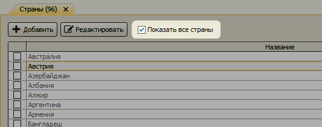
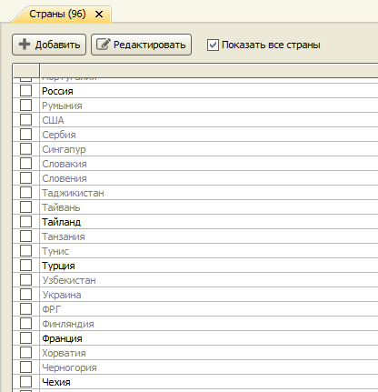
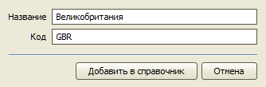
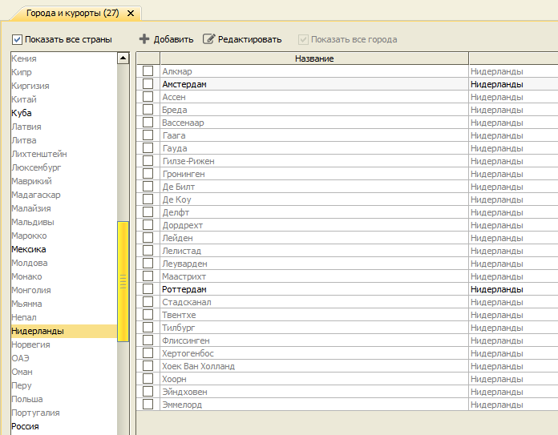
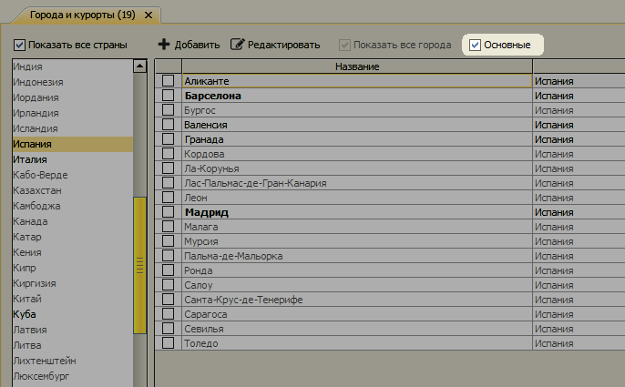

Измения в версии 2.8.3
Все города и страны
В справочниках "Страны" и "Города и курорты" появилась возможность выбрать любую страну или город мира без ввода названия вручную.
В справочнике "Страны" для отображения всех стран нужно включить чекбокс "Показать все страны".

В списке появятся все (туристические) страны мира. Те страны, которые еще не добавлены в справочник выделяются серым цветом.

Если справочник открыт для выбора, то достаточно отметить нужную страну и нажать кнопку "Выбрать". Страна автоматически добавится в справочник.
Если нужно добавить страну для последующего использования, можно открыть карточку страны и нажать кнопку "Добавить в справочник".

В справочнике "Города и курорты" можно включить показ всех стран и городов с помощью чекбокса "Показать все страны" или только все города выбранной страны с помощью чекбокса "Показать все города".

Дополнительно для стран с большим количеством города доступна опция "Основные", позволяющая оставить в списке только основые города страны.

Акты сверок
Для клиентов-юрлиц программа позволяет автоматически сформировать Акт сверки.
Остались вопросы? Напишите нам на e-mail